Self Evaluation Project
Andy
3/15/2022
library(tidyverse)## ── Attaching packages ─────────────────────────────────────── tidyverse 1.3.1 ──## ✓ ggplot2 3.3.5 ✓ purrr 0.3.4
## ✓ tibble 3.1.6 ✓ dplyr 1.0.7
## ✓ tidyr 1.1.4 ✓ stringr 1.4.0
## ✓ readr 2.1.1 ✓ forcats 0.5.1## ── Conflicts ────────────────────────────────────────── tidyverse_conflicts() ──
## x dplyr::filter() masks stats::filter()
## x dplyr::lag() masks stats::lag()library(gridExtra)##
## Attaching package: 'gridExtra'## The following object is masked from 'package:dplyr':
##
## combineRead Data
all_dat = read.csv('/Volumes/Programming/Spring 2022/project/all_dat.csv')
# all_dat = read.csv('D:/Spring 2022/Project/all_dat.csv')
morning_rt = read.csv('/Volumes/Programming/personal/progress/morning_routine.csv')Data Manipualation
colnames(all_dat) <- c('X', 'Name','Finished','Multiple','Phone_pickups',
'Screen_time','Created','Date','Drink','Key_words',
'Meditation','Mentality','Satisfaction',
'Reading','Productivity','Rise_time','Run','Social',
'Tech','Total','Total_todo','Work_done')
# Remove unnecessary columns & Modify some columns
all_dat <- all_dat %>%
dplyr::select(Date, everything(), Finished, Total_todo,-X,-Name,-Created, - Work_done) %>%
mutate(work_finished = round(Finished/Total_todo,4),
Drink = lag(Drink),
Tot_diff = lag(Total)-Total) %>% # Make a work_finished variable
# we lag(shift by 1) because we want the day after
tibble()
# Same for morning routine
morning_rt <- morning_rt %>%
select(Date, everything(), -X,-level_0,-index) %>%
mutate(Date = strptime(as.character(morning_rt$Date), "%m/%d/%Y"),
Date = format(Date, "%m/%d/%Y")) %>%
tibble()
# merge morning_rt with all_dat
all_morning_rt <- merge(morning_rt, all_dat,by="Date", all.x=T) %>%
arrange(desc(Date))
# Drop Name & Created column
dat_date = filter(all_dat, Date!=0) # Exclude wrong date format
# Only include multiple-related(social, tech, satisfaction, overall, etc)
# Multiple data length: 53
multiple_dat = filter(all_dat, Productivity!=0)Visualization
p1 <- ggplot(data = all_dat, alpha=.5) +
geom_density( aes(Total), color = 'red')
p2 <- ggplot(data = all_dat) +
geom_density( aes(work_finished), color = 'blue')
p3 <- ggplot(data = all_dat, alpha=.5)+
geom_density( aes(Reading), color = 'purple')
p4 <-ggplot(data = all_dat, alpha=.5)+
geom_density(aes(Meditation), color = 'black')
p5 <- ggplot(data = all_dat, alpha=.5)+
geom_density(aes(Phone_pickups), color = 'green')
p6 <- ggplot(data = all_dat, alpha=.5)+
geom_density(aes(Screen_time), color = 'orange')
p7 <- ggplot(data = all_dat, alpha=.5)+
geom_density(aes(Rise_time), color = 'skyblue')
p8 <- ggplot(data = all_dat, alpha=.5)+
geom_density(aes(Drink), color = 'darkgreen')
grid.arrange(p1, p2, p3,p4,p5,p6,p7,p8, nrow = 4)## Warning: Removed 3 rows containing non-finite values (stat_density).## Warning: Removed 1 rows containing non-finite values (stat_density).
#ggplot(data = all_morning_rt)+
#geom_bar(aes(morning_thoughts_check, fill = push_up_check))Linear Regression
# Click below to see more about lm() summary function
# https://www.learnbymarketing.com/tutorials/explaining-the-lm-summary-in-r/#:~:text=Summary%20in%20R-,Explaining%20the%20lm()%20Summary%20in%20R,the%20error%20of%20the%20model.
meditation_all <- lm(Meditation ~ Multiple+ Phone_pickups+ Screen_time+ Drink+
Reading+ Rise_time+ Total_todo + Total + work_finished,
data = all_dat)
summary(meditation_all)##
## Call:
## lm(formula = Meditation ~ Multiple + Phone_pickups + Screen_time +
## Drink + Reading + Rise_time + Total_todo + Total + work_finished,
## data = all_dat)
##
## Residuals:
## Min 1Q Median 3Q Max
## -11.4508 -2.7803 0.3629 2.7224 14.6644
##
## Coefficients:
## Estimate Std. Error t value Pr(>|t|)
## (Intercept) -27.928856 2.194822 -12.725 < 2e-16 ***
## Multiple -1.799546 0.294213 -6.116 2.09e-09 ***
## Phone_pickups 0.057313 0.007467 7.676 1.04e-13 ***
## Screen_time 0.011173 0.002078 5.375 1.23e-07 ***
## Drink 0.363632 0.364830 0.997 0.319
## Reading -0.095219 0.015795 -6.029 3.47e-09 ***
## Rise_time 0.044732 0.003794 11.791 < 2e-16 ***
## Total_todo -0.125133 0.077555 -1.613 0.107
## Total 69.036541 3.967694 17.400 < 2e-16 ***
## work_finished -12.220280 2.156463 -5.667 2.61e-08 ***
## ---
## Signif. codes: 0 '***' 0.001 '**' 0.01 '*' 0.05 '.' 0.1 ' ' 1
##
## Residual standard error: 4.22 on 446 degrees of freedom
## (4 observations deleted due to missingness)
## Multiple R-squared: 0.6503, Adjusted R-squared: 0.6432
## F-statistic: 92.13 on 9 and 446 DF, p-value: < 2.2e-16# Multiple data length: 53
multiple_tail <- lm(Multiple ~ Phone_pickups+ Screen_time+ Drink+ Meditation+
Reading+ Rise_time+ Total_todo +
work_finished + Total,
data = multiple_dat)
summary(multiple_tail)##
## Call:
## lm(formula = Multiple ~ Phone_pickups + Screen_time + Drink +
## Meditation + Reading + Rise_time + Total_todo + work_finished +
## Total, data = multiple_dat)
##
## Residuals:
## Min 1Q Median 3Q Max
## -0.97525 -0.27817 0.01049 0.27852 0.98464
##
## Coefficients:
## Estimate Std. Error t value Pr(>|t|)
## (Intercept) 1.2658077 0.8799003 1.439 0.15615
## Phone_pickups 0.0034777 0.0026928 1.291 0.20214
## Screen_time -0.0022583 0.0008349 -2.705 0.00917 **
## Drink 0.0479972 0.1781246 0.269 0.78862
## Meditation -0.0226719 0.0180107 -1.259 0.21362
## Reading -0.0075525 0.0099885 -0.756 0.45292
## Rise_time 0.0035595 0.0017581 2.025 0.04795 *
## Total_todo -0.0292508 0.0255574 -1.145 0.25755
## work_finished 1.6374238 0.9161527 1.787 0.07961 .
## Total 2.5279760 1.8642379 1.356 0.18084
## ---
## Signif. codes: 0 '***' 0.001 '**' 0.01 '*' 0.05 '.' 0.1 ' ' 1
##
## Residual standard error: 0.4941 on 53 degrees of freedom
## Multiple R-squared: 0.7557, Adjusted R-squared: 0.7142
## F-statistic: 18.21 on 9 and 53 DF, p-value: 2.588e-13# Multiple data all
multiple_all <- lm(Multiple ~ Phone_pickups+ Screen_time+ Drink+ Meditation+
Reading+ Rise_time+ Run + Total_todo + Total ,
data = all_dat)
summary(multiple_all)##
## Call:
## lm(formula = Multiple ~ Phone_pickups + Screen_time + Drink +
## Meditation + Reading + Rise_time + Run + Total_todo + Total,
## data = all_dat)
##
## Residuals:
## Min 1Q Median 3Q Max
## -2.46929 -0.41776 -0.02991 0.41321 1.94234
##
## Coefficients:
## Estimate Std. Error t value Pr(>|t|)
## (Intercept) -0.0848254 0.3380570 -0.251 0.801990
## Phone_pickups 0.0041219 0.0011268 3.658 0.000284 ***
## Screen_time -0.0006595 0.0003081 -2.141 0.032843 *
## Drink -0.0234166 0.0555746 -0.421 0.673699
## Meditation -0.0447821 0.0066843 -6.700 6.28e-11 ***
## Reading -0.0104282 0.0023936 -4.357 1.64e-05 ***
## Rise_time 0.0036073 0.0005040 7.157 3.38e-12 ***
## Run 0.6963294 0.2609904 2.668 0.007906 **
## Total_todo -0.0153825 0.0114401 -1.345 0.179429
## Total 6.0135421 0.4177964 14.393 < 2e-16 ***
## ---
## Signif. codes: 0 '***' 0.001 '**' 0.01 '*' 0.05 '.' 0.1 ' ' 1
##
## Residual standard error: 0.6498 on 449 degrees of freedom
## (1 observation deleted due to missingness)
## Multiple R-squared: 0.5554, Adjusted R-squared: 0.5465
## F-statistic: 62.31 on 9 and 449 DF, p-value: < 2.2e-16Linear Regression for Work_done (all_dat)
#################### Linear Regression Work_done (all_dat) #####################
# Work done
work_finished_all <- lm(work_finished ~ Multiple + Phone_pickups + Screen_time +
Drink + Meditation + Reading + Rise_time + Run +
Total_todo,
data = all_dat)
summary(work_finished_all)##
## Call:
## lm(formula = work_finished ~ Multiple + Phone_pickups + Screen_time +
## Drink + Meditation + Reading + Rise_time + Run + Total_todo,
## data = all_dat)
##
## Residuals:
## Min 1Q Median 3Q Max
## -0.37080 -0.08256 0.00826 0.09489 0.39758
##
## Coefficients:
## Estimate Std. Error t value Pr(>|t|)
## (Intercept) 1.842e-01 5.753e-02 3.202 0.00146 **
## Multiple 1.032e-01 8.429e-03 12.241 < 2e-16 ***
## Phone_pickups 8.564e-05 2.348e-04 0.365 0.71547
## Screen_time -1.566e-05 6.262e-05 -0.250 0.80268
## Drink -5.041e-02 1.182e-02 -4.264 2.45e-05 ***
## Meditation 1.183e-02 1.070e-03 11.060 < 2e-16 ***
## Reading 2.372e-03 4.530e-04 5.236 2.53e-07 ***
## Rise_time -1.462e-04 7.999e-05 -1.828 0.06820 .
## Run -8.010e-02 5.640e-02 -1.420 0.15626
## Total_todo 5.904e-03 2.488e-03 2.373 0.01807 *
## ---
## Signif. codes: 0 '***' 0.001 '**' 0.01 '*' 0.05 '.' 0.1 ' ' 1
##
## Residual standard error: 0.1393 on 446 degrees of freedom
## (4 observations deleted due to missingness)
## Multiple R-squared: 0.6349, Adjusted R-squared: 0.6275
## F-statistic: 86.18 on 9 and 446 DF, p-value: < 2.2e-16all_dat$pred_work_finished <- predict(work_finished_all, newdata = all_dat)
# Explanatory variable: work_finished
ggplot(data = all_dat, aes(x = pred_work_finished, y = work_finished)) +
geom_point(alpha = 0.5, color = "darkgray") +
geom_smooth(color = "darkblue") +
geom_line(aes(x = work_finished,
y = work_finished), # Plotting the line, y = x
color = "red", linetype = 2) +
coord_cartesian( xlim = c(0, 1),
ylim = c(0, 1) ) # Limits the range of the## `geom_smooth()` using method = 'loess' and formula 'y ~ x'## Warning: Removed 4 rows containing non-finite values (stat_smooth).## Warning: Removed 4 rows containing missing values (geom_point).## Warning: Removed 3 row(s) containing missing values (geom_path).
# graph for legibility# Plot of residual error as a function of prediction
ggplot(data = all_dat, aes(x = pred_work_finished,
y = pred_work_finished - work_finished)) +
geom_point(alpha = 0.2, color = "darkgray") +
geom_smooth(color = "darkblue") +
geom_line(aes(x = pred_work_finished,
y = 0), # Plotting the line, y = 0
color = "red", linetype = 2) +
ylab("residual error (prediction - actual)")## `geom_smooth()` using method = 'loess' and formula 'y ~ x'## Warning: Removed 4 rows containing non-finite values (stat_smooth).## Warning: Removed 4 rows containing missing values (geom_point).## Warning: Removed 1 row(s) containing missing values (geom_path).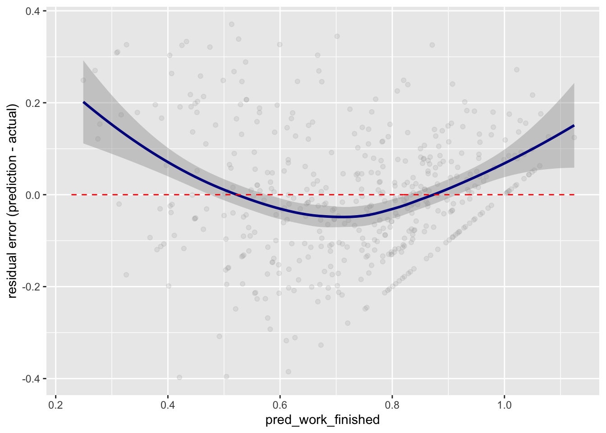 ## Residual Plot for Work_done (all_dat)
# Plot of residual error as a function of prediction
ggplot(data = all_dat, aes(x = pred_work_finished,
y = pred_work_finished - work_finished)) +
geom_point(alpha = 0.2, color = "darkgray") +
geom_smooth(color = "darkblue") +
geom_line(aes(x = pred_work_finished,
y = 0), # Plotting the line, y = 0
color = "red", linetype = 2) +
ylab("residual error (prediction - actual)")## `geom_smooth()` using method = 'loess' and formula 'y ~ x'## Warning: Removed 4 rows containing non-finite values (stat_smooth).## Warning: Removed 4 rows containing missing values (geom_point).## Warning: Removed 1 row(s) containing missing values (geom_path).
Testing Normality
################################## Normality ##################################
library(dplyr)
set.seed(1234)
dplyr::sample_n(all_dat, 10)## # A tibble: 10 × 21
## Date Finished Multiple Phone_pickups Screen_time Drink Key_words Meditation
## <chr> <dbl> <dbl> <dbl> <dbl> <dbl> <chr> <dbl>
## 1 08/11… 5 3 144 167 0 0 0
## 2 10/17… 15 3 123 200 0 0 14
## 3 01/10… 10 3.6 98 84 0 0 15
## 4 1/12/… 9 3 74 304 0 0 15
## 5 1/31/… 4 3 61 440 0 0 0
## 6 12/21… 8 3.6 107 314 0 0 0
## 7 02/20… 15 4 97 132 0 0 15
## 8 01/26… 10 4 126 149 0 0 15
## 9 01/03… 5 2.6 80 308 0 0 10
## 10 12/16… 8 3.4 97 201 0 0 15
## # … with 13 more variables: Mentality <dbl>, Satisfaction <dbl>, Reading <dbl>,
## # Productivity <dbl>, Rise_time <dbl>, Run <dbl>, Social <dbl>, Tech <dbl>,
## # Total <dbl>, Total_todo <dbl>, work_finished <dbl>, Tot_diff <dbl>,
## # pred_work_finished <dbl># The central limit theorem tells us that no matter what distribution things
# have, the sampling distribution tends to be normal if the sample is large
# enough (n > 30).
# The R function shapiro.test() can be used to perform the Shapiro-Wilk test
# of normality for one variable (univariate):
shapiro.test(all_dat$Total)##
## Shapiro-Wilk normality test
##
## data: all_dat$Total
## W = 0.94244, p-value = 2.305e-12Determining Distributions
library(fitdistrplus)## Loading required package: MASS##
## Attaching package: 'MASS'## The following object is masked from 'package:dplyr':
##
## select## Loading required package: survivallibrary(logspline)
# The kurtosis and squared skewness of your sample is plotted as a blue point
# named "Observation".
descdist(all_dat$Multiple, discrete = FALSE)
## summary statistics
## ------
## min: 1 max: 7
## median: 3.5
## mean: 3.460435
## estimated sd: 0.9778817
## estimated skewness: -0.2439422
## estimated kurtosis: 3.080442descdist(all_dat$Screen_time, discrete = FALSE)## summary statistics
## ------
## min: 14 max: 915
## median: 201
## mean: 233.987
## estimated sd: 126.1395
## estimated skewness: 1.589345
## estimated kurtosis: 6.826972wf <- c(na.omit(all_dat$work_finished))
descdist(wf, discrete = FALSE)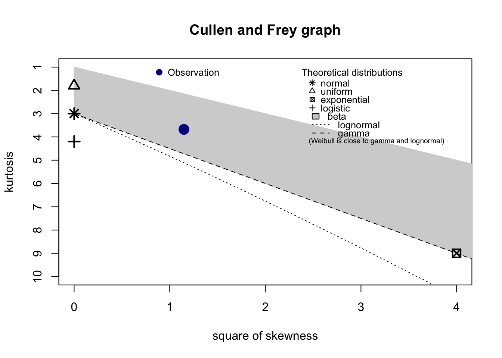
## summary statistics
## ------
## min: 0 max: 1
## median: 0.7857
## mean: 0.7267168
## estimated sd: 0.2281393
## estimated skewness: -1.071785
## estimated kurtosis: 3.677092fit.beta <- fitdist(wf, 'beta', method = "mme")
# method = "mme": Moment matching estimation consists in equalizing theoretical
# and empirical moments.
fit.gamma <- fitdist(all_dat$Screen_time, "gamma")
fit.normal <- fitdist(all_dat$Multiple, "norm")
plot(fit.beta)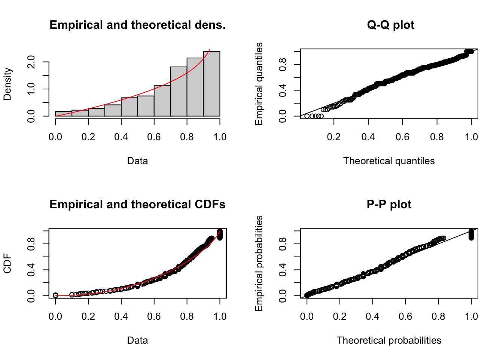
plot(fit.gamma)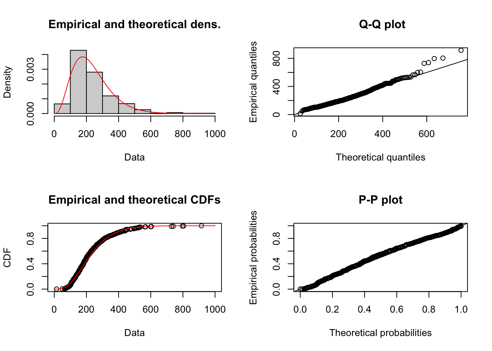
plot(fit.normal)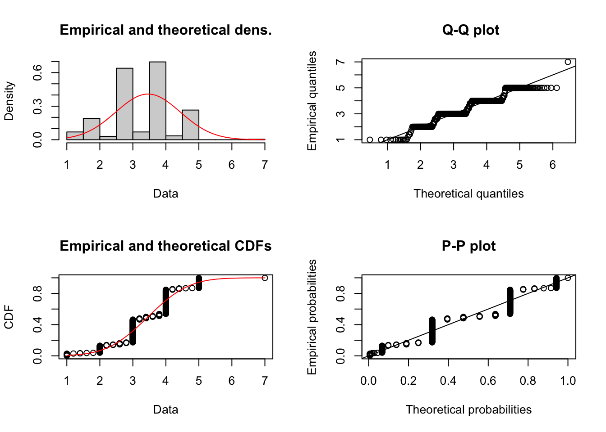
# mean square error
# test how fitted those are to each distributions
# 1. Generate 𝑀 samples of size 𝑛 from the estimated distribution.
# 2. For each sample obtain KS statistics using the estimated distribution as theoretical
# Links
# Finding Distributions: https://stats.stackexchange.com/questions/132652/how-to-determine-which-distribution-fits-my-data-best
# Kolmogorov-Smirnov test simulation: https://stats.stackexchange.com/questions/126539/testing-whether-data-follows-t-distribution/126552#126552
n.sims <- 5e4
stats <- replicate(n.sims, {
r <- rgamma(n = length(all_dat$Screen_time)
, shape= fit.gamma$estimate["shape"]
, rate = fit.gamma$estimate["rate"])
estfit.gamma <- fitdist(r, "gamma")
as.numeric(ks.test(r
, "pgamma"
, shape= estfit.gamma$estimate["shape"]
, rate = estfit.gamma$estimate["rate"])$statistic
)
})
plot(ecdf(stats), las = 1, main = "KS-test statistic simulation (CDF)",
col = "darkorange", lwd = 1.7)
grid()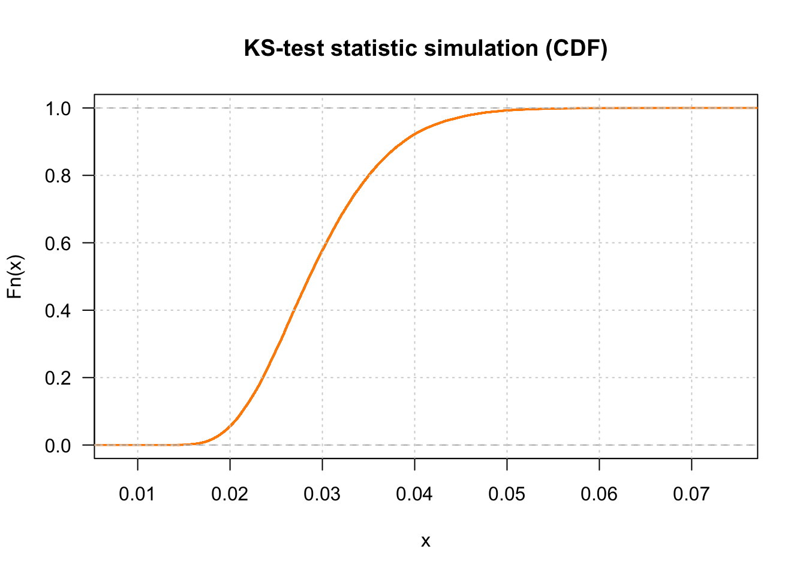
fit <- logspline(stats)
1 - plogspline(ks.test(all_dat$Screen_time
, "pgamma"
, shape= fit.gamma$estimate["shape"]
, rate = fit.gamma$estimate["rate"])$statistic
, fit
)## Warning in ks.test(all_dat$Screen_time, "pgamma", shape =
## fit.gamma$estimate["shape"], : ties should not be present for the Kolmogorov-
## Smirnov test## [1] 0.002386435Linear Regression Work_done (morning_rt)
# all_morning_rt
work_finished_morning <- lm(work_finished ~ Multiple + Phone_pickups + Screen_time +
Drink + Meditation + Reading + Rise_time + Run +
Total_todo+ total_checked + before_sleep_check +
rise_time_check + morning_thoughts_check +
push_up_check,
data = all_morning_rt)
summary(work_finished_morning)##
## Call:
## lm(formula = work_finished ~ Multiple + Phone_pickups + Screen_time +
## Drink + Meditation + Reading + Rise_time + Run + Total_todo +
## total_checked + before_sleep_check + rise_time_check + morning_thoughts_check +
## push_up_check, data = all_morning_rt)
##
## Residuals:
## Min 1Q Median 3Q Max
## -0.23382 -0.08199 -0.00102 0.08312 0.29517
##
## Coefficients:
## Estimate Std. Error t value Pr(>|t|)
## (Intercept) 0.3041264 0.0950382 3.200 0.00178 **
## Multiple 0.0781475 0.0161364 4.843 4.06e-06 ***
## Phone_pickups -0.0004891 0.0003991 -1.226 0.22287
## Screen_time -0.0001586 0.0001548 -1.025 0.30775
## Drink -0.0830239 0.0294097 -2.823 0.00562 **
## Meditation 0.0098193 0.0020790 4.723 6.67e-06 ***
## Reading 0.0030342 0.0015658 1.938 0.05512 .
## Rise_time -0.0003726 0.0001591 -2.342 0.02093 *
## Run 0.1153711 0.1318312 0.875 0.38334
## Total_todo -0.0024622 0.0041106 -0.599 0.55036
## total_checked -0.0143343 0.0256906 -0.558 0.57797
## before_sleep_checkTrue 0.1233314 0.0437884 2.817 0.00572 **
## rise_time_checkTrue 0.0619427 0.0413233 1.499 0.13664
## morning_thoughts_checkTrue 0.0638839 0.0486259 1.314 0.19156
## push_up_checkTrue 0.0461442 0.0500391 0.922 0.35839
## ---
## Signif. codes: 0 '***' 0.001 '**' 0.01 '*' 0.05 '.' 0.1 ' ' 1
##
## Residual standard error: 0.1126 on 114 degrees of freedom
## (12 observations deleted due to missingness)
## Multiple R-squared: 0.8119, Adjusted R-squared: 0.7888
## F-statistic: 35.14 on 14 and 114 DF, p-value: < 2.2e-16all_morning_rt$pred_work_finished <- predict(work_finished_morning, newdata = all_morning_rt)
# Explanatory variable: work_finished_morning
ggplot(data = all_morning_rt, aes(x = pred_work_finished, y = work_finished)) +
geom_point(alpha = 0.5, color = "darkgray") +
geom_smooth(color = "darkblue") +
geom_line(aes(x = work_finished,
y = work_finished), # Plotting the line, y = x
color = "red", linetype = 2) +
coord_cartesian( xlim = c(0, 1),
ylim = c(0, 1) ) # Limits the range of the## `geom_smooth()` using method = 'loess' and formula 'y ~ x'## Warning: Removed 12 rows containing non-finite values (stat_smooth).## Warning: Removed 12 rows containing missing values (geom_point).## Warning: Removed 12 row(s) containing missing values (geom_path).
# graph for legibility
# Plot of residual error as a function of prediction
ggplot(data = all_morning_rt, aes(x = pred_work_finished,
y = pred_work_finished - work_finished)) +
geom_point(alpha = 0.2, color = "darkgray") +
geom_smooth(color = "darkblue") +
geom_line(aes(x = pred_work_finished,
y = 0), # Plotting the line, y = 0
color = "red", linetype = 2) +
ylab("residual error (prediction - actual)")## `geom_smooth()` using method = 'loess' and formula 'y ~ x'## Warning: Removed 12 rows containing non-finite values (stat_smooth).## Warning: Removed 12 rows containing missing values (geom_point).## Warning: Removed 12 row(s) containing missing values (geom_path).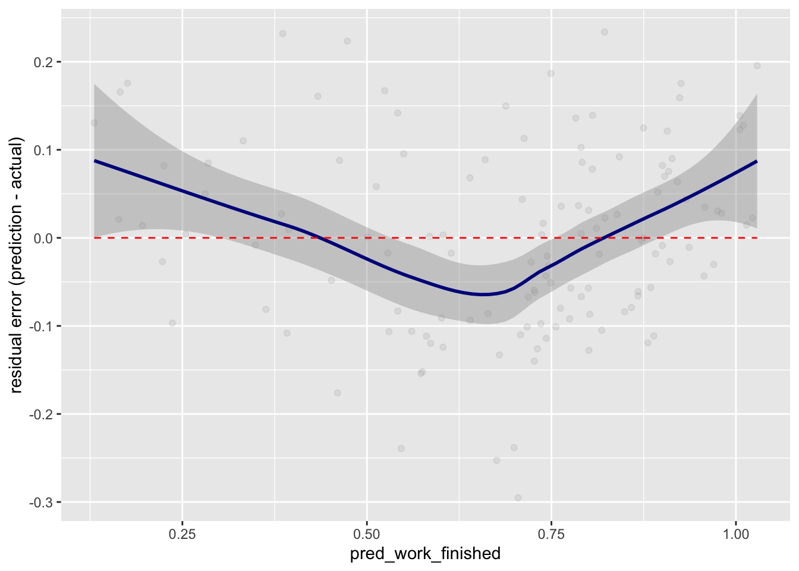
## Warning in eval(family$initialize): non-integer #successes in a binomial glm!##
## Call:
## glm(formula = work_finished ~ Multiple + Phone_pickups + Screen_time +
## Drink + Meditation + Reading + Rise_time + Run + Total_todo,
## family = binomial(link = "logit"), data = all_dat)
##
## Deviance Residuals:
## Min 1Q Median 3Q Max
## -0.82207 -0.21693 0.01743 0.27739 0.94820
##
## Coefficients:
## Estimate Std. Error z value Pr(>|z|)
## (Intercept) -2.0852121 1.0293710 -2.026 0.042794 *
## Multiple 0.5910096 0.1530542 3.861 0.000113 ***
## Phone_pickups 0.0003745 0.0041112 0.091 0.927418
## Screen_time 0.0002108 0.0010290 0.205 0.837706
## Drink -0.2396393 0.1816785 -1.319 0.187159
## Meditation 0.0637461 0.0185569 3.435 0.000592 ***
## Reading 0.0172408 0.0094019 1.834 0.066689 .
## Rise_time -0.0008559 0.0013753 -0.622 0.533748
## Run -0.5168363 1.0710626 -0.483 0.629419
## Total_todo 0.0412355 0.0459177 0.898 0.369169
## ---
## Signif. codes: 0 '***' 0.001 '**' 0.01 '*' 0.05 '.' 0.1 ' ' 1
##
## (Dispersion parameter for binomial family taken to be 1)
##
## Null deviance: 128.806 on 455 degrees of freedom
## Residual deviance: 49.521 on 446 degrees of freedom
## (4 observations deleted due to missingness)
## AIC: 312.24
##
## Number of Fisher Scoring iterations: 5## factor AME SE z p lower upper
## Drink -0.0394 0.0296 -1.3287 0.1839 -0.0975 0.0187
## Meditation 0.0105 0.0029 3.5906 0.0003 0.0048 0.0162
## Multiple 0.0971 0.0237 4.0917 0.0000 0.0506 0.1437
## Phone_pickups 0.0001 0.0007 0.0911 0.9274 -0.0013 0.0014
## Reading 0.0028 0.0015 1.8512 0.0641 -0.0002 0.0058
## Rise_time -0.0001 0.0002 -0.6231 0.5332 -0.0006 0.0003
## Run -0.0849 0.1759 -0.4829 0.6292 -0.4297 0.2598
## Screen_time 0.0000 0.0002 0.2048 0.8377 -0.0003 0.0004
## Total_todo 0.0068 0.0075 0.9003 0.3680 -0.0080 0.0215 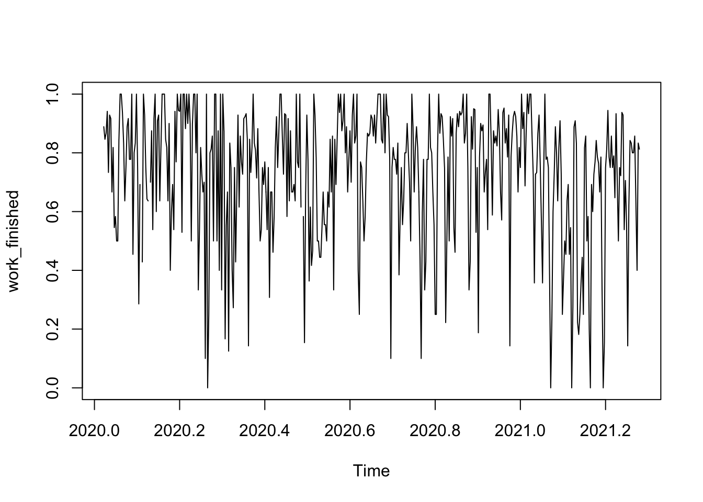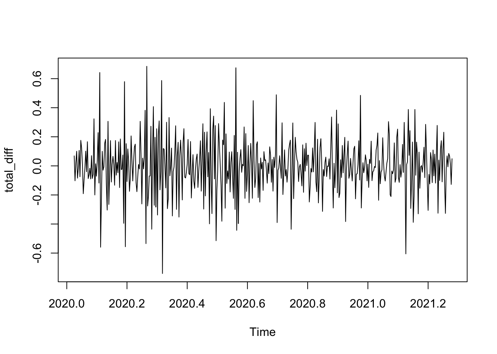
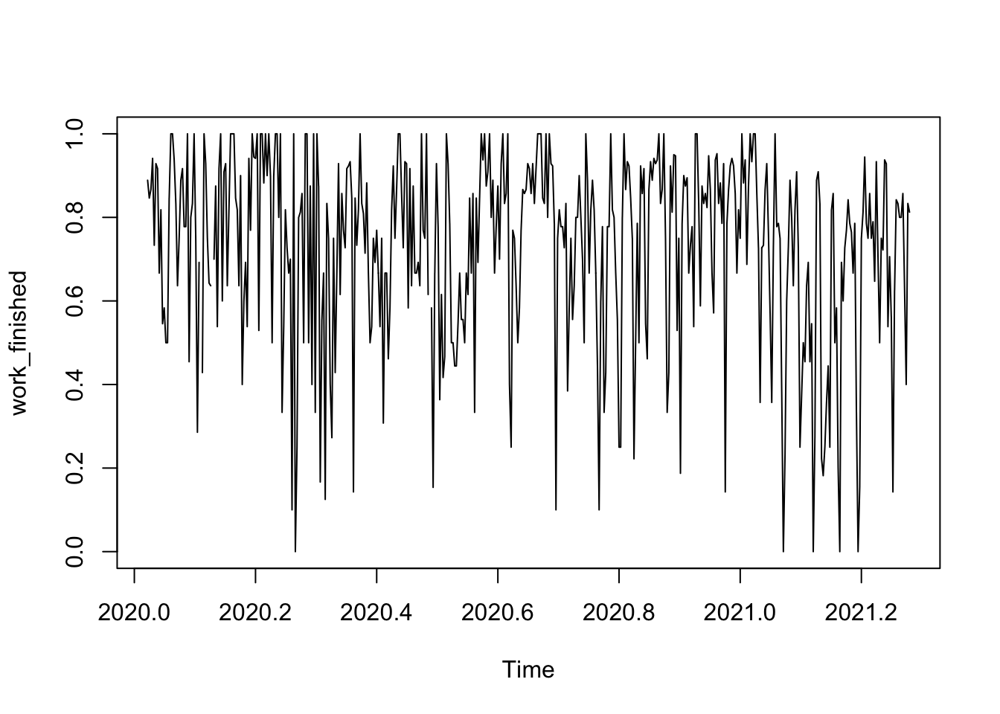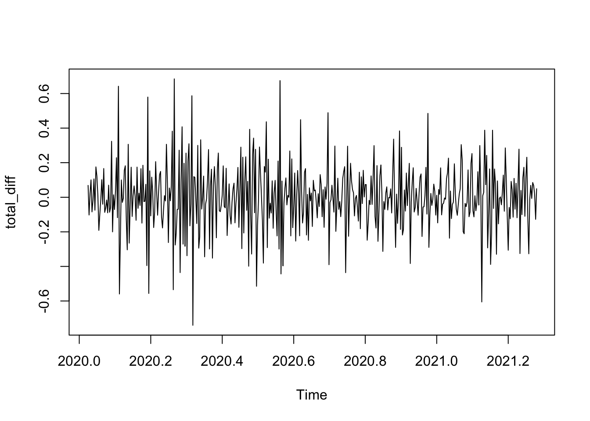